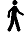
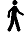

Routes from Haneda airport to Ryogoku station (Oedo line)



Tokyo Monorail: Haneda Airport --> Hamamatsucho (14 min)
Walk from Hamamatsucho --> Daimon station (10 min)
Oedo Line: Daimon --> Ryogoku (8 stations - 20 min)
|
|
Routes from Haneda airport to Ryogoku station (Oedo line) |
|

|
Tokyo Monorail: Haneda Airport --> Hamamatsucho (14 min) Walk from Hamamatsucho --> Daimon station (10 min) Oedo Line: Daimon --> Ryogoku (8 stations - 20 min) |